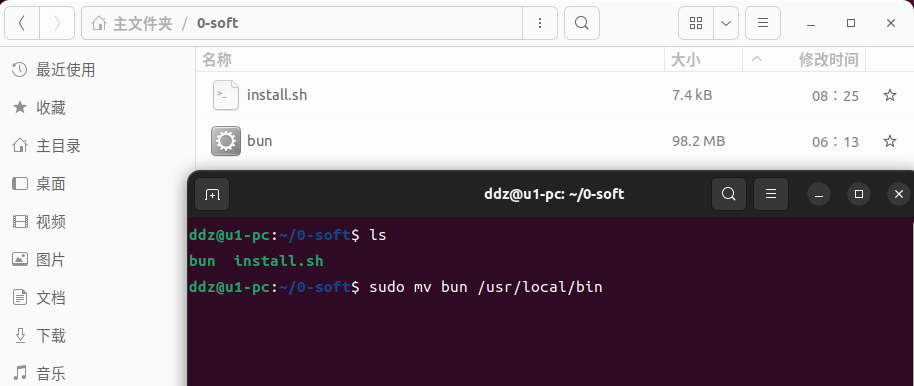

Bun是一个快速的……
curl -fsSL https://bun.sh/install | bash
install.sh会从Github上拉取文件……访问不了啊
在可以访问Github的机器上，进入 Releases · oven-sh/bun页面，之后自己下载安装包，这里下载的是bun-linux-x64.zip，解压之后就一个bun文件，最后修改权限
修改权限之后将bun移动到/usr/local/bin
ls sudo mv bun /usr/local/bin bun -v
